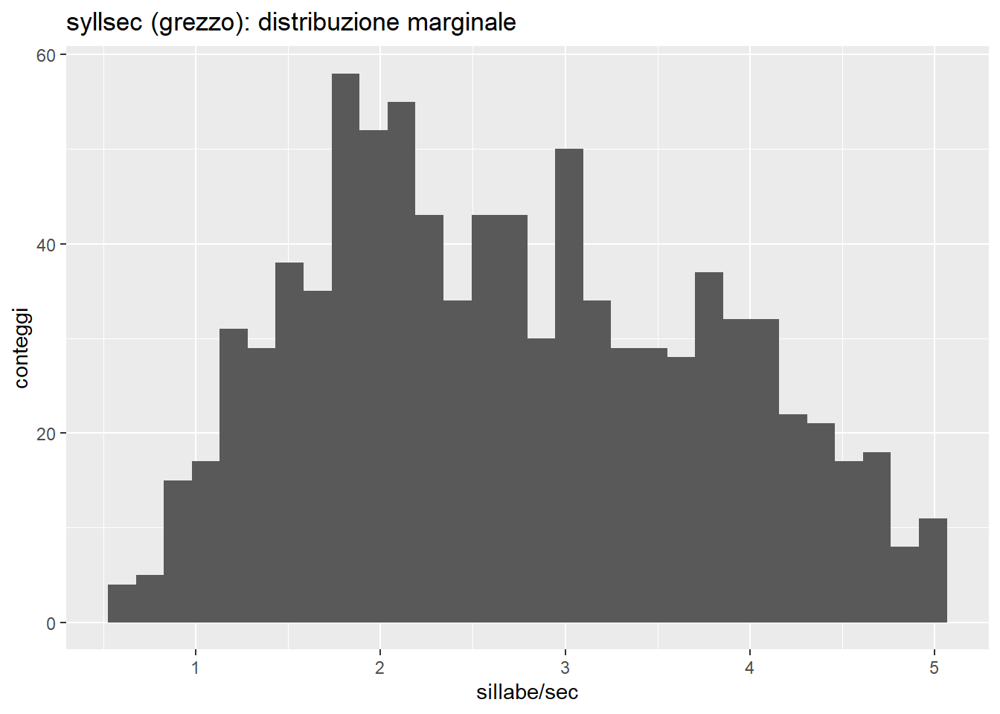
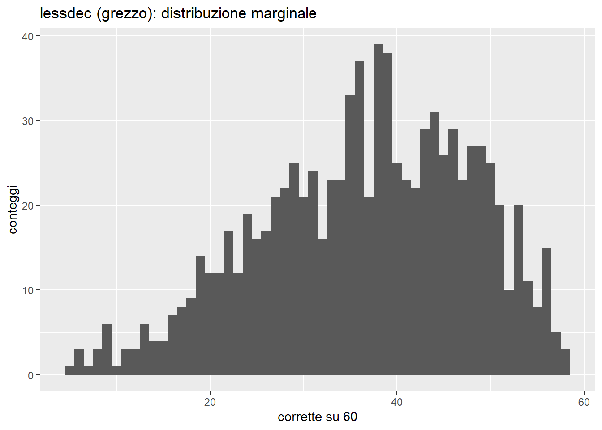
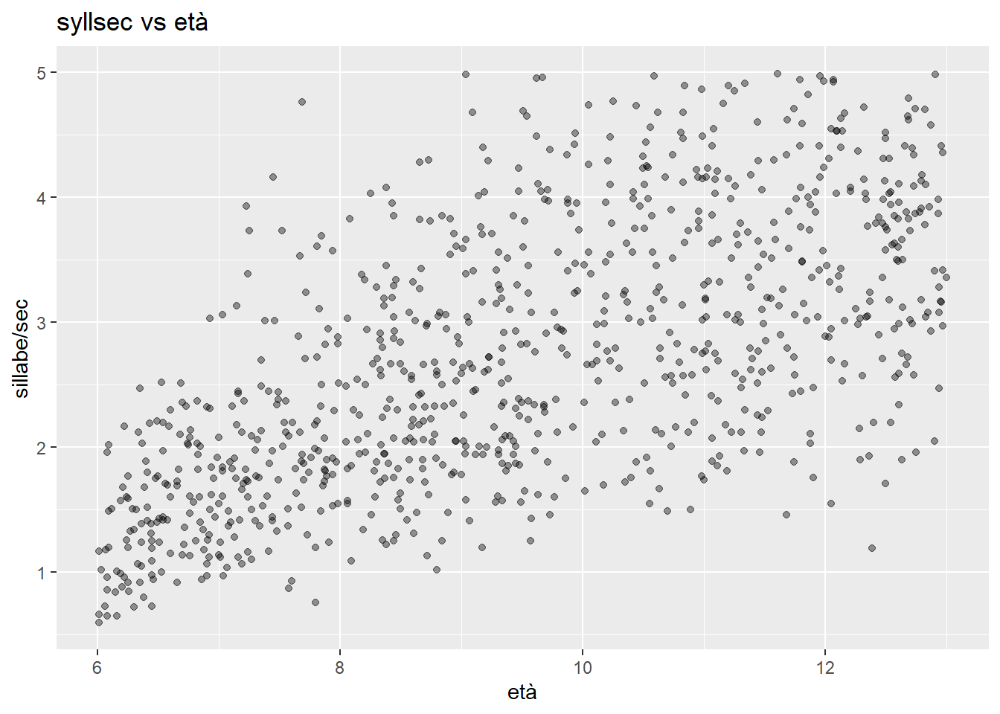
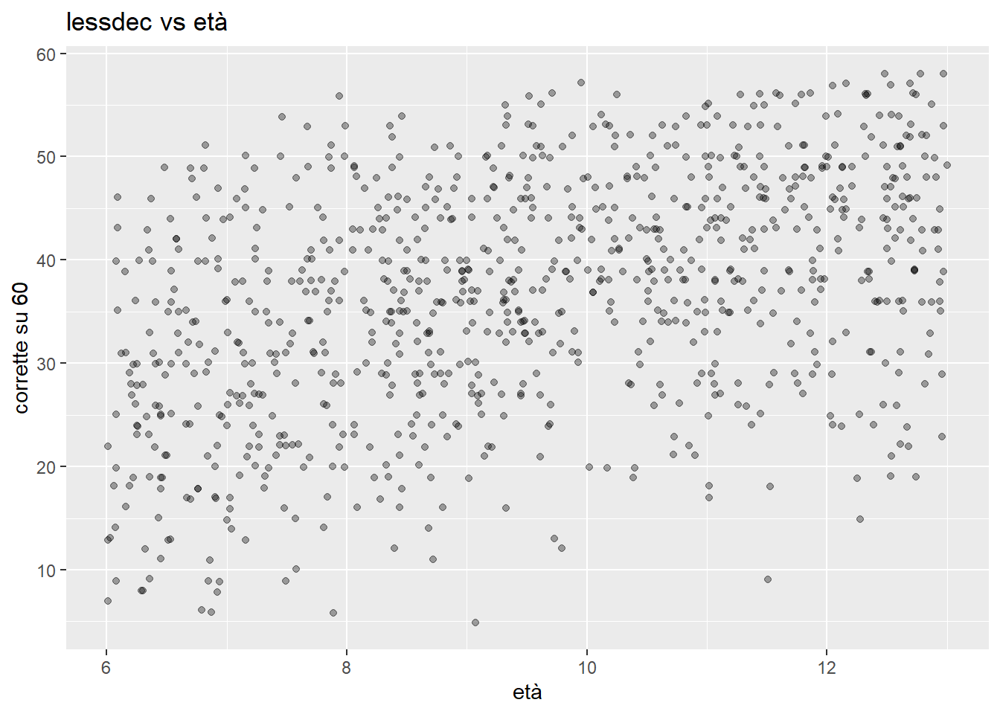
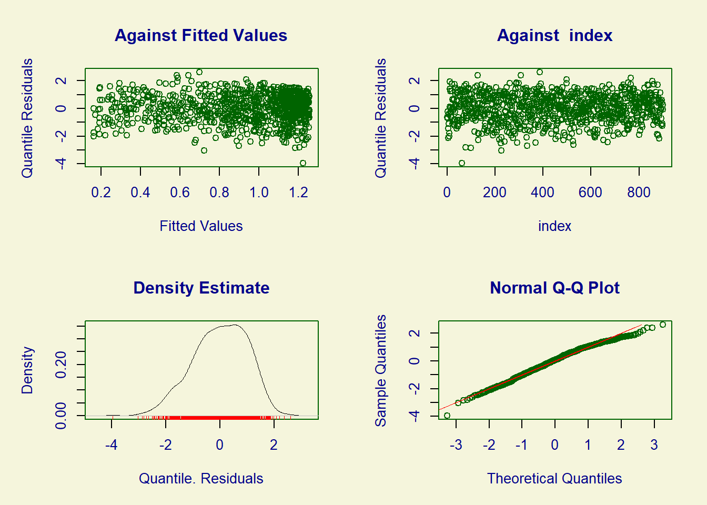
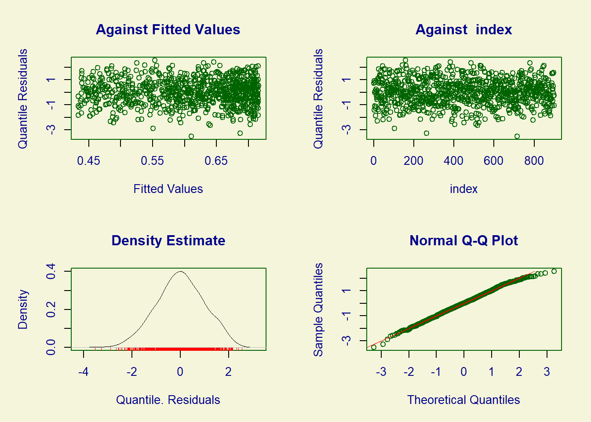
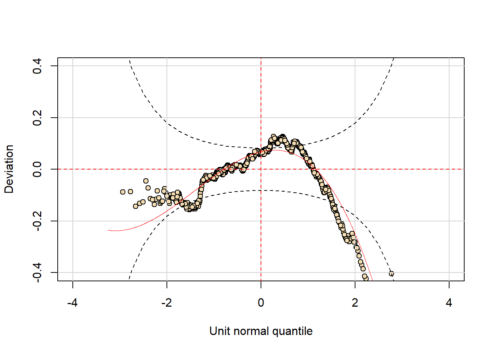
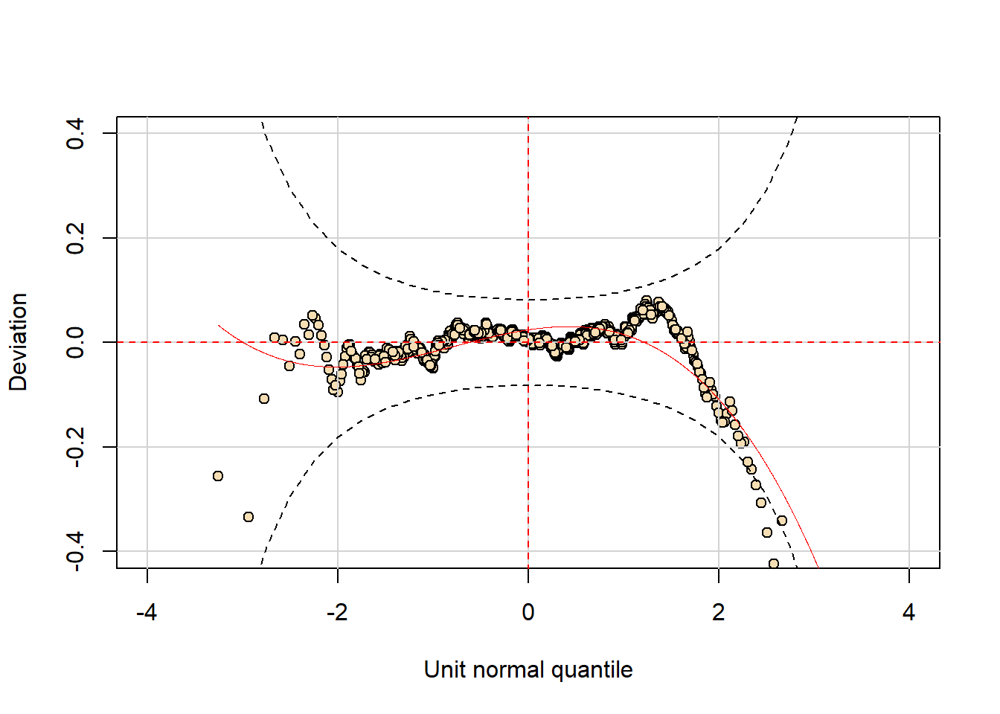
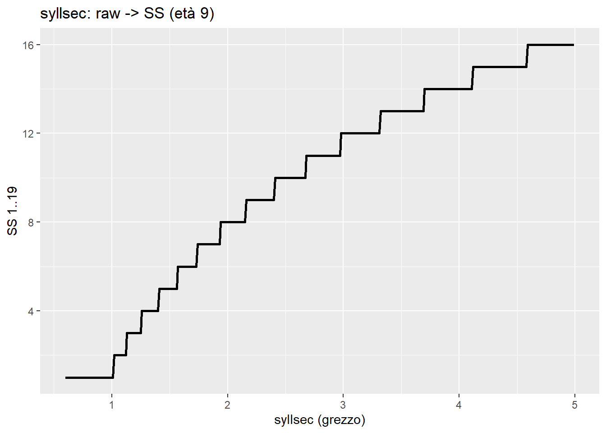
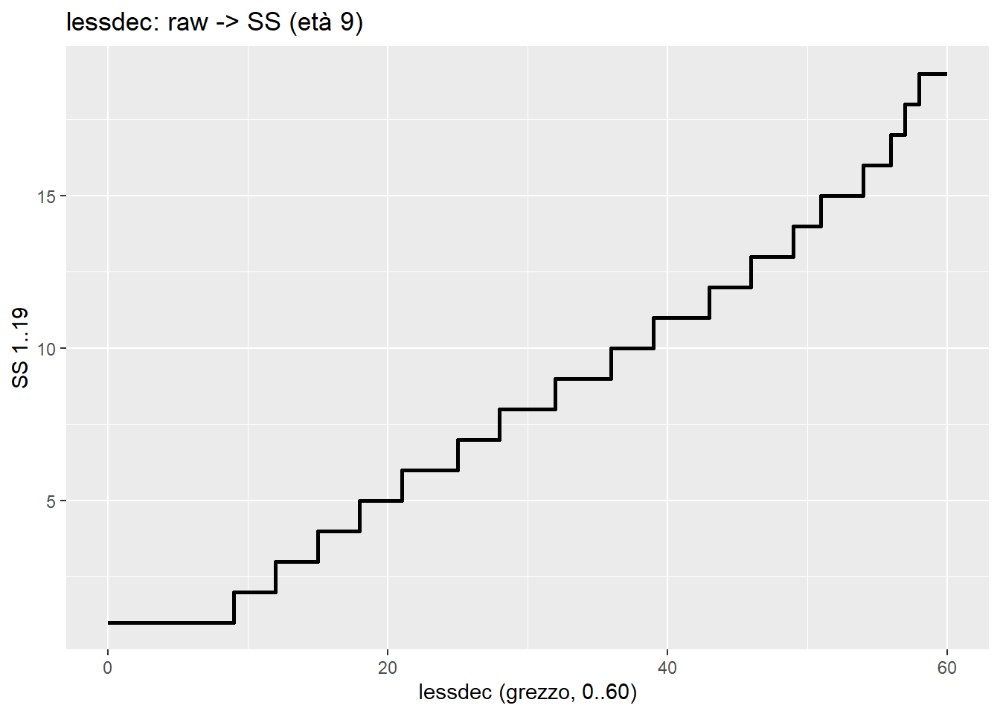

Filosofia del Continuous Norming: Un esempio in R con Mini-Deco (mini batteria inventata di lettura)
Autore/Autrice
Enrico Toffalini
Data di Pubblicazione
19 gennaio 2025
Perché questa pipeline
Nella prassi psicometrica si sente spesso: “i punteggi non sono gaussiani”, vero, e allora si ripiega su percentili e punteggi non parametrici come se non ci fosse alternativa. Il problema è che i percentili sono scomodi da aggregare, e spingono verso interpretazioni a checklist di cutoff.
All’opposto, a volte si usano z-score calcolati standardizzando i grezzi anche quando la distribuzione è lontana dalla normalità. Così lo z perde l’interpretazione di posizione in una distribuzione normale, e gli aggregati diventano fragili.
Poi c’è il tema dell’età: si continua a dividere in fasce. Sulle code, proprio dove servono cutoff clinici, i percentili sono instabili, e discretizzare l’età peggiora. Il continuous norming esiste, serve, ed è una prassi compatibile con l’idea di tratto latente continuo.
Infine, si sottovaluta l’utilità di aggregare punteggi standardizzati, si finisce a contare quanti task superano cutoff distinti. È un modo povero di trattare informazione continua, mentre l’aggregazione su standard score è prassi consolidata nella misura dell’intelligenza.
Qui mostriamo una pipeline table-driven: upstream (modello + guardrail + tabelle), downstream (scoring deterministico da tabelle). Il dataset è Mini-Deco_Sample.csv. La colonna lessdecTRIALS è ridondante, la ignoriamo, ma assumiamo che la decisione lessicale sia su k = 60 trial.
1) Setup, lettura dati, check e “realtà” dei punteggi
library(gamlss)library(gamlss.dist)library(ggplot2)dat <-read.csv("Mini-Deco_Sample.csv")# teniamo solo le colonne utili, ignoriamo lessdecTRIALS (ma fissiamo k=60)dat <- dat[, c("id","age","syllsec","lessdec")]# range del post: 6–13 annidat <- dat[dat$age >=6& dat$age <=13, ]# check minimistopifnot(all(dat$syllsec >0))stopifnot(all(dat$lessdec >=0& dat$lessdec <=60))k <-60age_grid <-seq(6, 13, by =0.25)# guardrail numericieps <-1e-6clamp_prob <-function(p) pmin(1- eps, pmax(eps, p))ss19 <-function(z) pmin(19, pmax(1, round(10+3*z)))# output sintetico: range e medie grezze per mezzi anniage_bin <-floor(dat$age *2) /2cat("Range età:", range(dat$age), "\n")
2) Guardiamo i grezzi: non normalità e dipendenza da età
Questa sezione serve solo a ricordare perché “standardizzare i grezzi” non è una soluzione.
Grafici: distribuzioni grezze e trend con l’età (folded)
# Distribuzioni marginalip1 <-ggplot(dat, aes(x = syllsec)) +geom_histogram(bins =30) +labs(title ="syllsec (grezzo): distribuzione marginale", x ="sillabe/sec", y ="conteggi")p2 <-ggplot(dat, aes(x = lessdec)) +geom_histogram(binwidth =1) +labs(title ="lessdec (grezzo): distribuzione marginale", x ="corrette su 60", y ="conteggi")print(p1)

Grafici: distribuzioni grezze e trend con l’età (folded)
print(p2)

Grafici: distribuzioni grezze e trend con l’età (folded)
# Grezzi vs età (jitter leggero per il discreto)p3 <-ggplot(dat, aes(x = age, y = syllsec)) +geom_point(alpha =0.4) +labs(title ="syllsec vs età", x ="età", y ="sillabe/sec")p4 <-ggplot(dat, aes(x = age, y = lessdec)) +geom_point(alpha =0.35, position =position_jitter(height =0.15, width =0)) +labs(title ="lessdec vs età", x ="età", y ="corrette su 60")print(p3)

Grafici: distribuzioni grezze e trend con l’età (folded)
print(p4)

3) Upstream: continuous norming via modelli semplici (GAMLSS)
Scelte minimali ma coerenti:
syllsec è continuo e positivo, usiamo una lognormale (LOGNO) con media monotona in età e dispersione smooth.
lessdec è un conteggio 0..60 con overdispersion, usiamo una Beta-Binomiale (BB) con probabilità monotona in età e dispersione smooth.
Diagnostica minima: non vogliamo fare un tutorial su GAMLSS, ma almeno guardiamo residui e un worm plot.
Diagnostica minima GAMLSS (folded)
par(mfrow =c(2,2))plot(fit_syll)

******************************************************************
Summary of the Quantile Residuals
mean = 0.0001048503
variance = 1.001112
coef. of skewness = -0.3693264
coef. of kurtosis = 2.800697
Filliben correlation coefficient = 0.9937754
******************************************************************
Diagnostica minima GAMLSS (folded)
plot(fit_less)

******************************************************************
Summary of the Randomised Quantile Residuals
mean = -0.0008716
variance = 0.9937713
coef. of skewness = -0.136323
coef. of kurtosis = 2.821541
Filliben correlation coefficient = 0.9984349
******************************************************************
Diagnostica minima GAMLSS (folded)
par(mfrow =c(1,1))# worm plot (se disponibile), utile per vedere bias in coda# (non sempre essenziale in un post didattico, ma è un buon promemoria)try(wp(fit_syll), silent =TRUE)

Diagnostica minima GAMLSS (folded)
try(wp(fit_less), silent =TRUE)

4) Upstream: costruire una riga di tabella, per capire cosa stiamo facendo
Prima di generare “tutto”, facciamo vedere l’operazione su una età (9 anni). Qui si vede l’idea: dal modello otteniamo la CDF condizionata, da lì percentili, z, SS.
4a) syllsec a 9 anni: raw -> percentile -> z -> SS(1..19)
age_show <-9.00# previsione parametri a età fissapA <-predictAll(fit_syll, newdata =data.frame(age = age_show))mu <-as.numeric(pA$mu)sg <-as.numeric(pA$sigma)# griglia raw fine per syllsecraw_grid_syll <-seq(floor(min(dat$syllsec)*100)/100, ceiling(max(dat$syllsec)*100)/100, by =0.01)# percentile condizionato (CDF)p <-pLOGNO(raw_grid_syll, mu = mu, sigma = sg)# guardrail: monotonia grezzo->p e clamp codep <-clamp_prob(cummax(p))# conversioniz <-qnorm(p)ss <-ss19(z)tab_syll_9 <-data.frame(measure ="syllsec",age_grid = age_show,raw = raw_grid_syll,p = p,z = z,ss_1_19 = ss)# mostro un estratto leggibile (non 400 righe)print(tab_syll_9[seq(1, nrow(tab_syll_9), by =20), ], row.names =FALSE)
Per un conteggio discreto, usiamo una correzione tipo mid-P: invece di prendere P(X ≤ x), prendiamo P(X < x) + 0.5·P(X = x). È una scelta pragmatica per rendere i percentili meno “a scalini”, senza fingere che il punteggio sia continuo.
5) Upstream: generare le tabelle complete (auditabili) su griglia d’età
Qui facciamo la parte “meccanica”: generiamo raw_to_norm per ogni età in griglia. Questo chunk è lungo, quindi lo teniamo folded, ma l’output lo useremo sotto.
Generazione tabelle complete raw_to_norm (folded)
raw_to_norm <-NULLraw_grid_syll <-seq(floor(min(dat$syllsec)*100)/100, ceiling(max(dat$syllsec)*100)/100, by =0.01)raw_grid_less <-0:kfor (a in age_grid) {# --- syllsec --- pA <-predictAll(fit_syll, newdata =data.frame(age = a)) mu <-as.numeric(pA$mu); sg <-as.numeric(pA$sigma) p <-pLOGNO(raw_grid_syll, mu = mu, sigma = sg) p <-clamp_prob(cummax(p)) z <-qnorm(p) ss <-ss19(z) tmp <-data.frame(measure="syllsec", age_grid=a, raw=raw_grid_syll, p=p, z=z, ss_1_19=ss) raw_to_norm <-rbind(raw_to_norm, tmp)# --- lessdec --- pA <-predictAll(fit_less, newdata =data.frame(age = a)) mu <-as.numeric(pA$mu); sg <-as.numeric(pA$sigma) p_le <-pBB(raw_grid_less, mu = mu, sigma = sg, bd = k) p_lt <-pBB(raw_grid_less-1, mu = mu, sigma = sg, bd = k) p <- p_lt +0.5*pmax(0, p_le - p_lt) p <-clamp_prob(cummax(p)) z <-qnorm(p) ss <-ss19(z) tmp <-data.frame(measure="lessdec", age_grid=a, raw=raw_grid_less, p=p, z=z, ss_1_19=ss) raw_to_norm <-rbind(raw_to_norm, tmp)}# write.csv(raw_to_norm, "raw_to_norm.csv", row.names = FALSE)
6) Visualizzare davvero la tabella di conversione (raw -> standardizzato)
Qui estraiamo un’età e mostriamo la conversione in modo leggibile.
age_show <-9.00tab9_syll <- raw_to_norm[raw_to_norm$measure=="syllsec"& raw_to_norm$age_grid==age_show, ]tab9_less <- raw_to_norm[raw_to_norm$measure=="lessdec"& raw_to_norm$age_grid==age_show, ]# per syllsec mostro una sottogriglia per non stampare troppotab9_syll_small <- tab9_syll[seq(1, nrow(tab9_syll), by =20), ]print(tab9_syll_small, row.names =FALSE)
Un grafico didattico utile è raw -> SS per un’età (si vede subito monotonicità e “granularità” del discreto).
Grafici: raw -> SS a età fissa (folded)
p1 <-ggplot(tab9_syll, aes(x = raw, y = ss_1_19)) +geom_line(linewidth =1) +labs(title =paste0("syllsec: raw -> SS (età ", age_show, ")"),x ="syllsec (grezzo)", y ="SS 1..19")p2 <-ggplot(tab9_less, aes(x = raw, y = ss_1_19)) +geom_step(linewidth =1) +labs(title =paste0("lessdec: raw -> SS (età ", age_show, ")"),x ="lessdec (grezzo, 0..60)", y ="SS 1..19")print(p1)

Grafici: raw -> SS a età fissa (folded)
print(p2)

7) Tabella inversa “ideale”: SS -> intervallo di grezzo
Per syllsec (continuo) usiamo gli intervalli indotti da SS = round(10 + 3z). Per lessdec (discreto) invertiamo la tabella raw -> SS e prendiamo min/max.
I grezzi possono essere non gaussiani, e va bene, il punto è modellare una distribuzione condizionata plausibile e poi standardizzare in modo interpretabile.
Il continuous norming evita “fasce di età” e riduce instabilità sulle code.
Distribuire tabelle (CSV) invece del modello rende lo scoring auditabile e stabile.
Una volta ottenuti z e SS coerenti, l’aggregazione diventa naturale, invece di contare cutoff indipendenti.